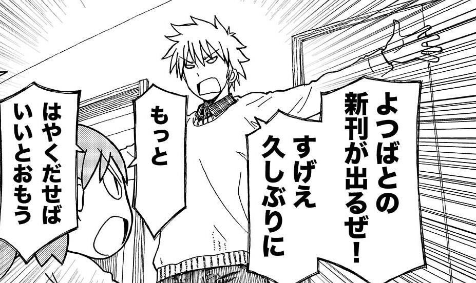

6.Casual Articulation
- In casual speech, sometimes words are said in a way that is more drawly and that broadens out the sounds. Depending on the context, this can be seen as masculine, unrefined, and/or emotional.
- While it is impossible to give an exhaustive list, you can look for certain patterns. Adjectives like すごい will often be pronounced すげえ; うるさい can become うるせえ or even うっせえ.

- This can happen with verb endings like ～ない and ～たい too.
- Examples:
全然できない → 全然できねえ (I can't do it at all)
酒が飲みたい → 酒が飲みてえ (I want to drink)
勉強したくない → 勉強したくねえ (I don't want to study)